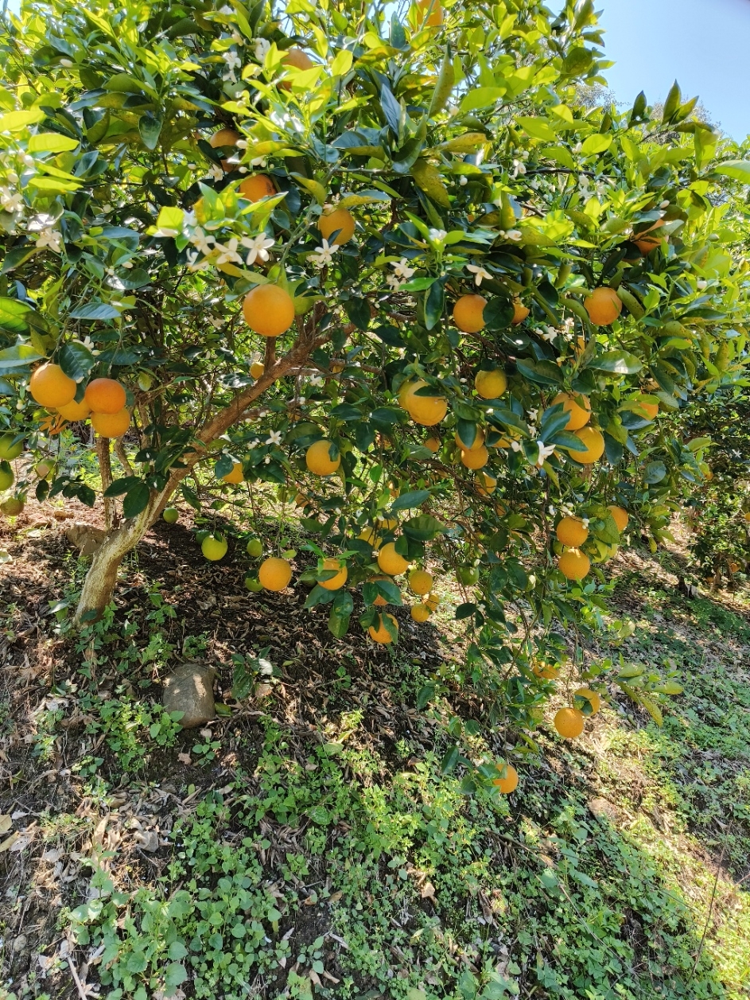

"Mi trabajo de sueños"
El trabajo de mis sueños es tener mi propio negocio de comercialización de granos como maíz, frijol y alimentos para aves y cerdos además de tener mis propios terrenos para poder sembrar plantas de naranja, maíz criollo entre otras cosas.
Razones por las que me gustaría tener este trabajo
- Me gusta este tipo de negocios
- Por negocio familiar
- Tengo experiencia en este rubro
- Para incrementar mis ingresos
- Llevar a otro nivel el negocio
Tabla de pasos a seguir
| Pasos para seguir | Descripción |
|---|---|
| Conseguir capital | Conseguir el capital suficiente para comprar el producto y las herramientas de trabajo |
| Buscar proveedores y compradores | Conseguir proveedores con un precio competitivo y compradores para vender el producto |
| Ahorrar e invertir | Apartar dinero de las utilidades para la compra de los terrenos y plantas |
